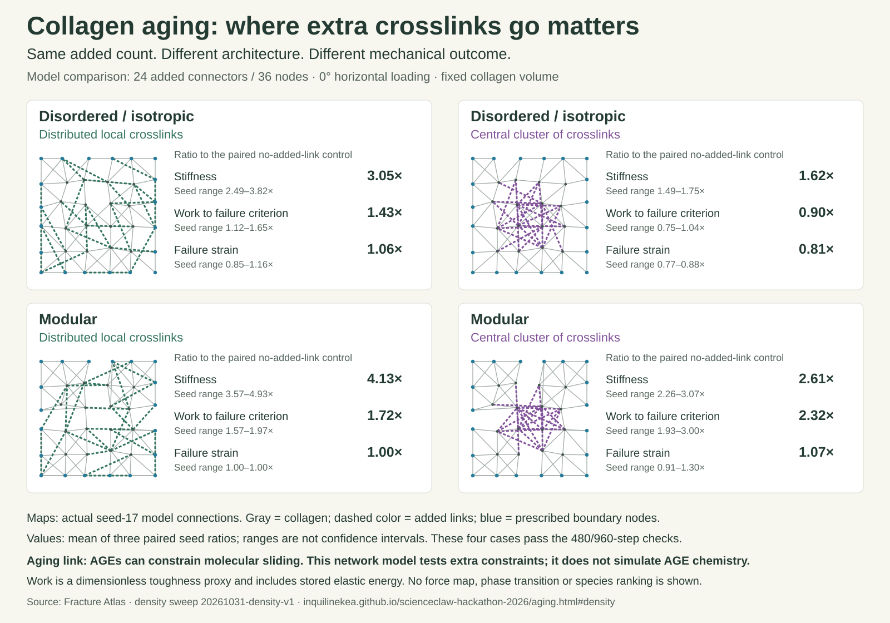

AGING · CONNECTIVITY · MECHANICAL TRADEOFFS
Where the links go matters.
Extra constraints can reinforce weak connections, or increase stiffness while reducing the work a network carries before failure. Architecture changes the outcome.
A connection to aging, with a scale gap: AGE crosslinks can constrain molecular sliding inside collagen fibrils. The atlas represents added constraints between network nodes. It tests a mechanical hypothesis; it does not map these connectors to years of age or measured AGE concentrations.
Same skeleton. Same crosslink count. Different placement.
Gray lines are original collagen fibers; dashed colored lines are added connectors. Blue nodes receive the prescribed boundary displacement. These maps show connectivity, not force magnitude or a failure trajectory. Maps use seed 17; metrics summarize three paired seeds.
A value above 1 means an increase relative to that seed's same skeleton without added connectors. † marks an unresolved value: at least one selected result or its baseline is capped, fails the metric's numerical check, or lacks the measurement. Ranges show seed variation, not confidence intervals.
Loading prescribes u = ε n[n·(X − center)] on 20 perimeter nodes, with zero transverse perimeter strain; 16 interior nodes relax. Angle changes select saved experiments. Connector stiffness is fixed at 0.20 and rupture extension at 30%. Placement also changes connector lengths and orientations.
What this suggests about aging
Connectivity alone is not enough. These starting networks all have 36 nodes and 82 collagen fibers. Adding 24 connectors gives the same total connection count in each. Their different behavior therefore cannot be explained by average connectivity alone. The positions, directions, lengths and material laws of the connections matter.
Stiffer can still mean less damage-tolerant. In the disordered example at 0°, clustered connectors increase stiffness but lower mean work and failure strain. In the modular example, clustered connectors increase all three. Reinforcement of weak interfaces is a plausible interpretation of the latter, not a measured force-path attribution.
Energy before damage is not a phase transition. The full density explorer separately plots work before first connector/fiber damage and before first collagen damage. Work includes recoverable elastic energy. A thermodynamic transition, a rigidity transition and a damage avalanche are different claims; this experiment does not establish the first two.
Species comparison needs molecular evidence. The beaver–human pilot supplies matched backbones. Chemistry, sliding, bending and rupture remain uncalibrated, so there is no evidence here that beaver collagen is intrinsically tougher.
Watch solved force redistribution and damage in all four networks.
Larger-network microrheology: intact versus locally damaged.
A figure you can publish
The four-panel overview uses completed, numerically checked results at 0° and 24 added connectors. Its networks are actual model geometries and its values are saved results.


Evidence and reproducibility
Experiments show that glycation can alter molecular sliding and failure without a matching increase in fibril modulus (Fessel et al., 2014). Other experiments found increased fibril strength and stiffness without induced brittleness (Svensson et al., 2018). Molecular simulations show how AGE density and energy capacity can shift loading from sliding toward stretching (Kamml et al., 2023). These studies motivate the hypothesis; they do not validate the atlas's numerical parameter values.
Density methods · Pinned simulation snapshot · WordPress visualization index